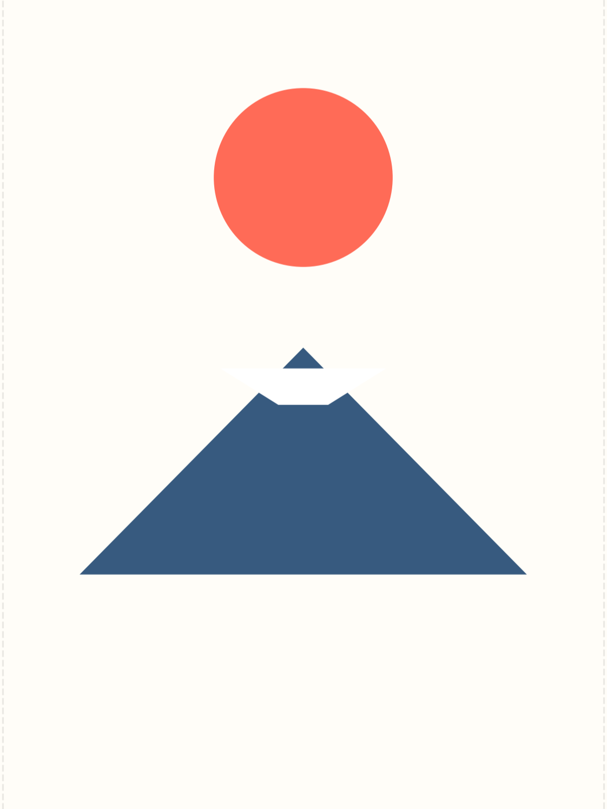

謹んで新春のお慶びを申し上げます。旧年中は格別のご高配を賜り厚く御礼申し上げます。本年もご期待に沿えるよう精進してまいります。
旧年中は大変お世話になりました。本年も変わらぬお引き立てのほどよろしくお願い申し上げます。皆様のご健康とご多幸をお祈りいたします。
変更はカードに即反映／カードをタップで裏表切替
※ 宛名と差出人は必須です（空欄不可）。

A=宛名 / B=敬称コード / C=差出 / D=挨拶文 / E=「謹賀新年」表示(0/1) / F=挨拶文背景(0/1) ※ 敬称コード → 0:様, 1:殿, 2:君, 3:御中, 4:(-)なし